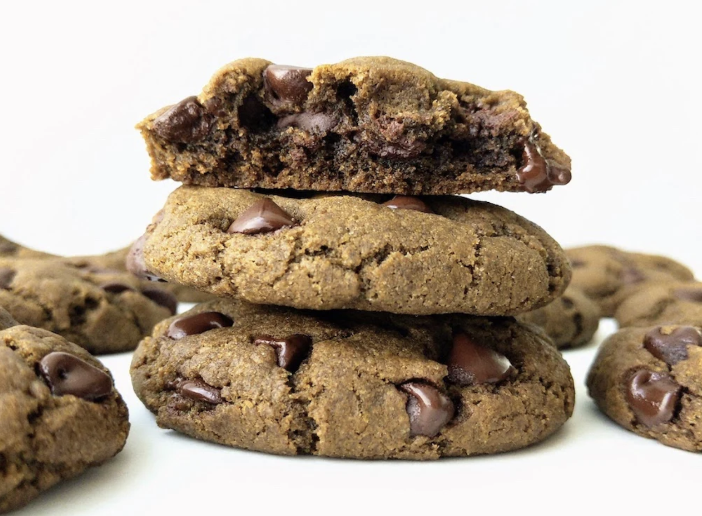

Hojicha Cookie Recipe

Use this recipe to create a batch of soft, chewy hojica cookies!
Ingredients:
- 190g (1 1/3 cups) all-purpose flour
- 2.5g (1/2 teaspoon) baking powder
- 3g (1/2 teaspoon) baking soda
- 0.75g (1/8 teaspoon) salt
- 10g (2 tablespoons) hojicha powder
- 60g (1/4 cup) granulated sugar
- 120g (3/4 cup) brown sugar
- 90mL (6 tablespoons) neutral oil(vegatable oil)
- 60mL (1/4 cup) milk
- 5mL (1 teaspoon) vanilla extract
- 100g (1/2 cup)chocolate chips
Steps:
- Stir together 190 g (1 1/3 cups) flour, 2.5 g (1/2 teaspoon) baking powder, 3 g (1/2 teaspoon) baking soda, and 0.75 g (1/8 teaspoon) salt in a medium bowl. Set aside.
- Combine 10 g (2 tablespoons) Hojicha Powder, 60 g (1/4 cup) granulated sugar, and 120 g (3/4 cup) brown sugar in a large bowl.
- Add 90 ml (6 tablespoons) oil and stir, then add 60 ml (1/4 cup) milk and 5 ml (1 teaspoon) vanilla. Mix together until well incorporated.
- Sift in flour mixture, and stir until just combined.
- Fold in 100 g (1/2 cup) chocolate chips.
- Cover and chill the dough in the fridge overnight (or a minimum of one hour).
- When ready to bake, preheat the oven to 375°F (190°C) and line two baking sheets with parchment paper.
- Scoop or roll 12 balls of cookie dough and place on the prepared baking sheets. Leave about 2 inches between the cookies.
- Chill each batch of cookie dough for 10 minutes before baking.
- Bake for 10 minutes until the edges begin to set and the middle is slightly under baked.
- Let the cookies cool on the baking sheet for 10 minutes.
- Gently transfer the cookies onto a wire rack to full cool and firm up.
- Serve your freshly baked hojicha chocolate chip cookies with a hojicha latte!